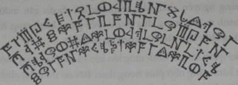
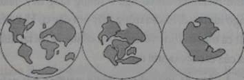

Bach’uuk dẫn cả bọn xuống đường hầm bên dưới trái tim ngọc. Cửa mở ra một cầu thang hẹp xoắn ốc dẫn xuống sâu hơn bên dưới kim tự tháp. Tất cả đi hàng một. Jake nhận thấy cả bọn đã xuống bên dưới kim tự tháp, hoặc có thể thật ra kim tự tháp lớn hơn vẻ ngoài theo như nhìn từ bên trên. Có thể nổi trên bề mặt chỉ là bể nổi của một kiến trúc lớn hơn nhiều.
Cả đám cứ đi lòng vòng một hồi.
Cuối cùng thì cầu thang dẫn đến một phòng khác, trần phẳng nhưng căn phòng lại hình tròn. Những khối thạch nhũ ngọc thạch khổng lồ treo phía cao trên trần nhìn như hàm răng của một con ác thú hóa thạch to lớn nào đó. Chúng lấp lánh tỏa sáng cả không gian bên trên.
Jake theo Bach’uuk bước vào trong căn phòng. Bach’uuk vẫn thoăn thoắt dẫn cả bọn đi về phía một đường hầm khác ở đầu bên kia căn phòng. Hình như là lại thêm hàng tá những nấc thang khác, lại xuống, xuống, xuống.
Chỗ này còn dẫn xuống tới đâu nữa nhỉ? Jake tự hỏi, nhưng đã bận để tâm hết vào căn phòng này rồi. Cậu bước chậm lại. Marika và Pindor theo sát cậu.
Trên sàn nhà có một thiết bị khổng lồ. Đó là một bánh xe tròn bằng vàng nguyên chất, nằm trên nền đá, choán gần mười mét. Vành bánh xe bên trong khía chữ V nhìn giống bánh răng. Một cái bánh răng khác khít vào bên trong cái thứ nhất.
Jake quan sát cái bánh răng lớn kẽo cà kẽo kẹt quay một chút, kéo cái bánh răng nhỏ phía trong theo. Rồi nó dừng lại như thể để đánh dấu thời gian. Mà dám là thế thật. Jake đi vòng qua rìa bên ngoài của bánh răng nọ. Mặc dù trên đó không có chỉ dẫn nào, Jake vẫn nhận ra hình dạng này.
Marika cũng cùng lúc nhận ra điều đó khi theo sau lưng Jake. “Nhìn nó giống bánh xe tính lịch của bọn tớ.”
Jake gật đầu. Người Maya đã phát triển một loại lịch chi tiết sử dụng những bánh xe ăn khít vào nhau như những bánh răng. Cậu lại băn khoăn thắc mắc không hiểu cái nào có trước đấy. Người Maya đã phát minh ra loại lịch này, hay những người Maya cổ ở đây đã làm ra lịch này và trở về quê nhà của họ cùng với tri thức đó? Jake tiếp tục đi vòng quanh rìa bánh xe. Theo lời Marika, kim tự tháp đã có từ trước khi những tộc người đến đây, thậm chí từ trước cả khi người Neanderthal cư ngụ ở thung lũng này. Jake bắt đầu thấy ngờ ngợ những điều cậu trông thấy nơi đây có khả năng là phát xuất của tất cả mọi tri thức và khoa học cổ đại và rồi lại được đưa trở lại quê nhà của các tộc người nọ.
Bach’uuk, đứa đã từng được chiêm ngưỡng hết mấy thứ này trước đây rồi, đứng chờ cả bọn ở lối dẫn vào đường hầm bên kia.
Jake đang định đi tiếp thì bỗng nhận ra gì đó trên bức tường lượn tròn. Từng hàng từng hàng chữ viết cổ viết đầy bức tường, phủ kín từ nền lên tận trần, nét khắc sắc sảo như thể được cắt bằng tia lazer. Jake nhìn lướt qua văn bản cổ xưa nọ.

Thứ chữ gì vậy nhỉ? Ai đã viết chúng? Jake lướt ngón tay qua những kí tự. Chắc đó là người đã xây kim tự tháp này. Có thể đó cũng là những người đã mang những tộc người lưu lạc khắp trái đất này đến vùng đất hoang này.
Cậu đi dọc theo bức tường, băng lại phía Bach’uuk, thằng nhỏ càng lúc càng nhíu mày nhăn nhó, tỏ ra nôn nóng hết sức. Cả bọn phải đi tiếp. Nhưng khi đang đi vòng quanh căn phòng thì Jake bỗng thấy một hình vẽ xuất hiện trước mắt mình. Hình vẽ nọ được khắc vào một khoảng trống trên tường. Đó là hình ba vòng tròn, trong đó có mấy hình gì đó xúm xít vào nhau, tạo thành một bức phù điêu đổ bóng xuống.

Jake lùi lại để nhìn toàn cảnh rồi bỗng sững lại, trố mắt nhìn vòng tròn đầu tiên, hoàn toàn không nói nên lời. Cậu bước lại gần. Mặc dù những chi tiết không rõ ràng lắm nhưng bức phù điêu nọ rõ ràng là giống hệt một tấm bản đồ thế giới, một tấm bản đồ dạng thô. Cậu lần ngón tay theo từng khối hình khắc trong vòng tròn đầu tiên, nhẩm tên từng lục địa.
“Châu Phi, Nam Mỹ, châu Úc...”
Vòng tròn tiếp theo cũng là hình những lục địa đó, nhưng chúng dịch chuyển sát lại, khít nhau như trong trò chơi xếp hình, phần đất nhô ra ở châu Mỹ ghép vào chỗ hỏm vào ở châu Phi. Và cứ vậy.
Vòng tròn cuối cùng là hình tất cả mấy lục địa hợp thành một khối duy nhất. Jake há hốc mồm, cậu lại lùi ra xa để nhìn cho rõ toàn bộ. Cậu bắt đầu hiểu ra mấy thứ trước mặt mình đây là gì. Thời của khủng long, thế giới chỉ gồm một lục địa lớn. Nhưng rồi một cơn đại hồng thủy và những dòng chảy mác ma dần dần khiến khối lục địa ấy nứt ra và tạo thành bảy lục địa nhỏ ngày nay.
Jake nuốt nước bọt, cậu lẩm bẩm tên khoa học của đại lục địa vẽ trong vòng tròn cuối cùng. “Pangaea.”
Pindor sững người. Nó nhìn Jake lạ lùng. “Tớ không biết Jake lại biết tiếng La tinh đó.”
Jake nhíu mày nhìn nó. “Gì cơ?”
“Pangaea. Đó là tiếng La tinh. Đó là tiếng nói của dân tộc tớ.”
Jake rùng mình nhận ra. Pindor nói đúng. Từ Pangaea thực chất được cấu tạo từ hai từ trong tiếng La tinh. Cậu hình dung ra trong đầu.
Pan - tất cả
Gaea = thế giới
Vậy chữ Pangaea có thể dịch ra là Toàn Cầu.
Jake nhíu mày. Toàn Cầu cũng là thứ ngôn ngữ chung mọi người sử dụng ở đây. Chắc không chỉ là tình cờ? Cậu nhìn Pindor rồi lại nhìn tấm bản đồ. Cậu chầm chậm xoay người lại, choáng váng trước nhận thức mới mẻ đó. Những người bạn của cậu không nói tiếng Toàn Cầu mà nói tiếng Pangaea.
Jake lại quay lại nhìn tấm bản đồ, rùng mình. Pangaea là thế giới tiền sử với khủng long và cây cối nguyên thủy. Giống ở đây. Cậu giơ tay lên, đặt lòng bàn tay lên đại lục địa.
Mình đang ở đây chăng?
Nếu điều đó là phải thì giờ đây trước mắt cậu chính là hình dạng của thế giới. Từ lúc cậu và Kady đặt chân tới đây, cậu đã hoàn toàn đi không đúng vấn đề. Vấn đề không phải là chúng đang ở đâu, mà là khi nào. Jake vẫn đang đứng trên trái đất - nhưng là ở quá khứ cách đó hai trăm triệu năm.
“Đó là Pangaea,” cậu nói lớn.
Marika có vẻ rất bối rối trước vẻ sửng sốt của Jake đối với bức vẽ đó, “Jake, chuyện gì vậy?”
Cậu lắc đầu. Không còn thời gian để giải thích, mà cậu cũng không chắc là tụi kia sẽ tin. Có thể là chưa đâu.
Pindor trỏ thanh gươm về phía Bach’uuk, “Chúng ta phải đi thôi.”
Jake để mình bị lôi đi. Cậu đi mà hai chân cứ đờ ra. Một tiếng craccch lớn lôi tia nhìn của cậu xuống hệ thống bánh răng đồng hồ trên sàn. Hệ thống nọ vừa dịch qua một bánh răng. Cái bánh xe nhỏ bên trong chuyển động. Jake lại nhìn lên tường, lên tấm bản đồ Pangaea.
Tất cả là thời gian.
Jake biết đó chính là trung tâm để giải tất cả những bí ẩn nơi đây. Cậu vừa quay đi thì bỗng nhận ra một ánh vàng lóe lên trên nền đá. Vòng quay của cái bánh răng bên trong vướng vào một cái gì đó treo lủng lẳng. Nhìn như một đồng xu dẹt bằng vàng. Đồng xu nọ dịch một hồi thì kẹt trong bánh răng rồi lủng lẳng ở đó.
Jake bước lại chỗ cặp bánh răng nọ. Đó có phải là...?
"Chúng ta phải đi thôi", Pindor kiên quyết. Nó đổi tay cầm gươm luôn, rõ ràng là nó đang lo cho người của nó, vùng đất của nó lắm.
Nhưng Jake vẫn cố rướn người nhìn vào trong bánh răng bên ngoài, nhìn cho bằng được thứ đang máng vào bánh răng nhỏ. Đó không phải một đồng xu. Jake nhận ra thứ đó. Cậu bước vào bên trong vòng bánh răng ngoài, thận trọng không chạm gì đến mấy cái răng của nó rồi nhẹ nhànng bước vào bánh răng bên trong. Cậu cúi xuống nhặt thứ đó lên.
Cậu không lầm. Đó là một cái đồng hồ quả quýt cũ đã sờn mẻ. Jake ngắm nghía cái đồng hồ, lật tới lật lui. Cha cậu cũng có một cái y hệt.
Jake phát hiện sau lưng có vết khắc. Mắt cậu tối sầm lại khi đọc những dòng khắc trên đó.
Richard thương yêu của em,
Tặng anh vật bé nhỏ bằng vàng này, để đánh dấu vòng thứ mười cuộc hành trinh quanh mặt trời của chúng ta.
Với tất cả tình yêu thương, dưới những vì sao,
Penelope
Jake bỗng thấy căn phòng chao đảo, một phần đời cậu nghĩ đã chết từ lâu bỗng đâu ùa về. Cậu sụm xuống, trúng vành bánh răng rồi ngã phịch ra đất, thế mà cậu thậm chí không hề cảm thấy gì. Thế giới của cậu thoắt chốc chỉ còn xoay quanh chiếc đồng hồ... và những lời khắc trên đó.
" Jake!" Marika vội chạy đến bên cậu. Nhỏ chìa tay định dìu cậu dậy.
Cậu lờ đi, vẫn chăm chăm nhìn chiếc đồng hồ trong lòng bàn tay. Những ngón tay cậu siết chặt quanh cái vỏ bằng vàng, cứng, lạnh lẽo - và rất thật. Cậu thì thầm phép nhiệm mầu ấy, sợ chỉ cần to tiếng là sẽ xua phép mầu đi mất.
Jake không có chút khái niệm sao cuối cùng cậu lại ở trong đường hầm hẹp và dài cắt qua đá núi lửa. Cậu nhớ là tụi bạn đã phải nửa lôi kéo nửa dỗ dành cậu đi theo. Rồi thêm nhiều bậc thang nữa, đó là một phòng đá lớn mà cá Bach’uuk và Pindor phải hợp sức mới mở được. Lối đi ở bên dưới tảng đá, một hầm ngầm. Bach’uuk dẫn đầu, tay giơ cao một khối ngọc thạch trắng tỏa sáng.
Cả bọn tiếp tục di chuyển trong im lặng. Tụi bạn của Jake đã cảm thấy được giờ cậu như một cái ao phủ một lớp băng mỏng manh. Tụi bạn đối với cậu hết sức cẩn trọng. Marika cứ ở rịt bên mình, đợi cậu mở lời.
Jake cầm cái đồng hồ quả quýt bằng cả hai tay như thể chiếc đồng hồ nặng đến nỗi không thể mang nổi bằng một tay. Cậu phải dùng sức của cả thân người để mang chiếc đồng hồ ấy.
“Vậy nghĩa là sao chứ?” Cuối cùng cậu cũng lên tiếng, nhưng chỉ lẩm bẩm một mình chứ không phải để ý gì đến Marika.
Câu hỏi như một hạt cát rời ra, kéo theo sau cả một cơn bão. Tại sao cái đồng hồ lại ở đó? Làm thế nào cậu lại đến được đây? Và khi nào? Cha mẹ cậu đã đến miền đất này sao? Hay cái đồng hồ chỉ tình cờ bị hút vào đây, cũng như Jake và Kady? Nếu cha mẹ cậu đã từng đến đây, tại sao không ai nói cậu nghe, chưa ai từng đề cập đến chuyện này?
Bí ẩn quay cuồng quanh những câu hỏi ấy.
Jake rùng mình; một câu hỏi cuối cùng bật ra. Cậu cố cưỡng lại vì câu hỏi ấy chất chứa quá nhiều đau đớn và buồn lo.
Có thể nào cha mẹ cậu còn sống không?
Đây là một nhận định nguy hiểm. Nếu Jake tự cho phép mình tin vào điều đó và sau đó lại chứng minh đấy là điều sai lầm thì chẳng khác nào lại một lần nữa phải chịu nỗi đau khổ mồ cồi. Jake không biết liệu cậu có thể chịu thêm điều đó nữa không.
Nhưng mà...
Cậu nhìn cái đồng hồ. Cậu có thể cảm thấy trọng lượng chiếc hồ ấy, sờ ngón tay vào một vết lõm trên đó. Đây không phải là thứ tưởng tượng trẻ con, một thứ hi vọng không căn cứ. Đây là chiếc đồng hồ của cha cậu... nằm ngay trong tay cậu đây.
Jake nắm chặt chiếc đồng hồ và nhận ra một điều. Trong lúc này, thế là đã đủ. Cậu không thể biết gì thêm được nữa. Cha cậu đã cảnh báo cậu, đừng để cho trí tưởng tượng của mình lồng lên. Cha dạy rằng một nhà khoa học thực sự phải biết cân bằng giữa giả thiết và thí nghiệm thực tế.
Jake hít một hơn đài. Giờ đây cậu sẽ làm đúng vậy.
Cậu đã tìm được chiếc đồng hồ của cha.
Đó là sự thật.
Nhưng thế có nghĩa là gì thì vẫn chưa thể biết được. Tính cho đến thời điểm này.
Jake bình tâm lại, để cho những lời khắc ở mặt sau vỏ đồng hồ sưởi ấm mình, tưởng như đó là nụ cười dịu dàng của mẹ. "Tặng anh vật bé nhỏ bằng vàng này, để đánh dấu vòng thứ mười cuộc hành trình quanh mặt trời của chúng ta".
Jake từ từ để tâm đến mọi chuyện xung quanh. Cậu nhìn thấy một dòng nước nhỏ giọt trên tường, ngửi thấy mùi trứng thối trong không khí. Chất lưu huỳnh trong những lỗ thông của núi lửa. Trong đường hầm, nhiệt độ càng lúc càng cao, không khí ướt át đầy hơi nước.
Jake nghe Pindor bảo Bach’uuk, “Tụi mình bây giờ chắc đang đi dưới khu rừng."
Bach’uuk lắc đầu, “Không xa nữa đâu.”
“Cậu nói vậy nãy giờ” Pindor rít lên.
Jake nuốt nước bọt, nhìn xuống chiếc đồng hồ quả quýt. Cậu dùng một ngón tay cạy chiếc đồng hồ mở ra. Giờ cậu đã đủ bình tĩnh để làm việc đó, vỏ đồng hồ móp méo, cái chốt xiêu vẹo, nhưng Jake đã mở ra được. Mặt kính đồng hồ, cũng như lớp vỏ vàng bên ngoài, đã không còn nguyên vẹn. Bề mặt kính có một vết nứt rộng, tổn hại nọ khơi dậy nỗi lo sợ trong lòng cậu. Làm thế nào mà chiếc đồng hồ lại tơi tả đến mức này?
Nhưng nỗi lo sợ nhanh chóng nhạt dần khi cậu nhìn thấy cây kim giây vẫn đang chạy trên mặt đồng hồ. Đáng ra cái đồng hồ phải chết rồi mới phải. Cái đồng hồ này là một loại đồng hồ lên dây cót kiểu cũ, trẻn đầu có một bộ phận lên dây nhỏ xíu. Nhưng điều khiến Jake hoàn toàn khó hiểu và buộc cậu phải tập trung trở lại thực tế không phải là vậy.
Cây kim giây tích tắc chậm chạp và chắc chắn. Nhưng là theo chiều ngược lại. Ngược chiều kim đồng hồ.
Cái đồng hồ này đang chạy ngược!
Jake chưa kịp nghĩ xem thế nghĩa là gì thì Pindor đã reo lên, “Lối ra kia rồi!”
Jake bất thần nhận ra tiếng ầm ầm vang động. Bach’uuk giơ khối ngọc thạch lên cao, soi một thác nước hùng vĩ chắn ngang miệng hầm. Lối đi này đến giờ vẫn còn là bí mật cũng không có gì đáng ngạc nhiên. Lối ra của cậu ẩn ngay sau một thác nước.
Cả bọn rảo bước tiến tới cùng nhau. Marika quay lại nhìn Jake.
Cậu đã sập cái đồng hồ, nhét vào túi rồi cài kĩ nút lại. Cậu đặt lòng bàn tay lên chỗ đó, không muốn phải xa cái đồng hồ chút nào. Nhưng cậu bắt gặp ánh nhìn của Marika. Cậu gật đầu. Cậu ý thức được hoàn cảnh nguy cấp hiện tại. Trong khi trận chiến vẫn còn đang sục sôi phía trên kia, bí ẩn về chiếc đồng hồ sẽ phải để sau.
Nhưng cậu vẫn nhớ rõ ràng hình ảnh cây kim giây tích tắc chạy ngược. Cậu như nghe tiêng rên rỉ của bánh răng lịch khi xoay chuyển. Cậu hình dung ra bức phù điêu vẽ hình Pangaca chia tách.
Chìa khóa cho tất cả những bí ẩn đó chỉ gồm một từ. Thời gian. Và Jake chỉ biết chắc một điều. Thời gian đang cạn dần.